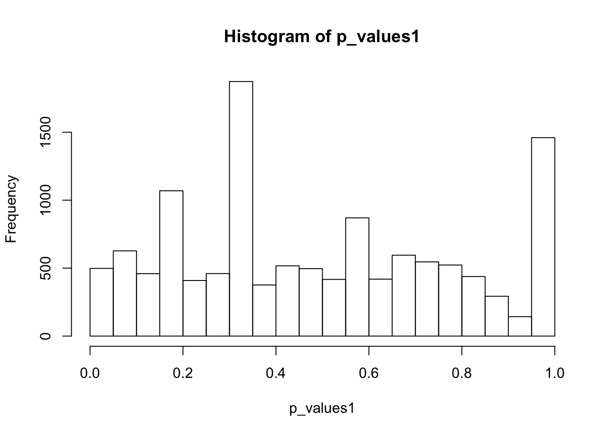

scde using PBMC data
DongyueXie
2020-01-15
Last updated: 2020-01-16
Checks: 7 0
Knit directory: misc/
This reproducible R Markdown analysis was created with workflowr (version 1.5.0). The Checks tab describes the reproducibility checks that were applied when the results were created. The Past versions tab lists the development history.
Great! Since the R Markdown file has been committed to the Git repository, you know the exact version of the code that produced these results.
Great job! The global environment was empty. Objects defined in the global environment can affect the analysis in your R Markdown file in unknown ways. For reproduciblity it’s best to always run the code in an empty environment.
The command set.seed(20191122) was run prior to running the code in the R Markdown file. Setting a seed ensures that any results that rely on randomness, e.g. subsampling or permutations, are reproducible.
Great job! Recording the operating system, R version, and package versions is critical for reproducibility.
Nice! There were no cached chunks for this analysis, so you can be confident that you successfully produced the results during this run.
Great job! Using relative paths to the files within your workflowr project makes it easier to run your code on other machines.
Great! You are using Git for version control. Tracking code development and connecting the code version to the results is critical for reproducibility. The version displayed above was the version of the Git repository at the time these results were generated.
Note that you need to be careful to ensure that all relevant files for the analysis have been committed to Git prior to generating the results (you can use wflow_publish or wflow_git_commit). workflowr only checks the R Markdown file, but you know if there are other scripts or data files that it depends on. Below is the status of the Git repository when the results were generated:
Ignored files:
Ignored: .DS_Store
Ignored: .Rhistory
Ignored: .Rproj.user/
Untracked files:
Untracked: analysis/pbmcdata.Rmd
Untracked: data/ROTS_results.RData
Untracked: data/pbmc.rds
Untracked: data/pbmc_counts.rds
Unstaged changes:
Modified: analysis/index.Rmd
Note that any generated files, e.g. HTML, png, CSS, etc., are not included in this status report because it is ok for generated content to have uncommitted changes.
These are the previous versions of the R Markdown and HTML files. If you’ve configured a remote Git repository (see ?wflow_git_remote), click on the hyperlinks in the table below to view them.
| File | Version | Author | Date | Message |
|---|---|---|---|---|
| Rmd | 3b6f80d | Dongyue Xie | 2020-01-16 | wflow_publish(“analysis/scdePBMC.Rmd”) |
Introduction
In my previous analysis, I tried RUV methods on single-cell RNA-Seq data. I only used top 1000 expressed genes from the dataset. So only a few of gene expressions are 0. This is not what typically scRNA data are. Also, I tried only in total 50 cells.
This time, I’m going to try PBMC data prepared by Satjia Lab.
library(MAST)Loading required package: SingleCellExperimentLoading required package: SummarizedExperimentLoading required package: GenomicRangesLoading required package: stats4Loading required package: BiocGenericsLoading required package: parallel
Attaching package: 'BiocGenerics'The following objects are masked from 'package:parallel':
clusterApply, clusterApplyLB, clusterCall, clusterEvalQ,
clusterExport, clusterMap, parApply, parCapply, parLapply,
parLapplyLB, parRapply, parSapply, parSapplyLBThe following objects are masked from 'package:stats':
IQR, mad, sd, var, xtabsThe following objects are masked from 'package:base':
anyDuplicated, append, as.data.frame, basename, cbind,
colnames, dirname, do.call, duplicated, eval, evalq, Filter,
Find, get, grep, grepl, intersect, is.unsorted, lapply, Map,
mapply, match, mget, order, paste, pmax, pmax.int, pmin,
pmin.int, Position, rank, rbind, Reduce, rownames, sapply,
setdiff, sort, table, tapply, union, unique, unsplit, which,
which.max, which.minLoading required package: S4Vectors
Attaching package: 'S4Vectors'The following object is masked from 'package:base':
expand.gridLoading required package: IRangesLoading required package: GenomeInfoDbLoading required package: BiobaseWelcome to Bioconductor
Vignettes contain introductory material; view with
'browseVignettes()'. To cite Bioconductor, see
'citation("Biobase")', and for packages 'citation("pkgname")'.Loading required package: DelayedArrayLoading required package: matrixStats
Attaching package: 'matrixStats'The following objects are masked from 'package:Biobase':
anyMissing, rowMediansLoading required package: BiocParallel
Attaching package: 'DelayedArray'The following objects are masked from 'package:matrixStats':
colMaxs, colMins, colRanges, rowMaxs, rowMins, rowRangesThe following objects are masked from 'package:base':
aperm, apply, rowsum
Attaching package: 'MAST'The following object is masked from 'package:stats':
filterlibrary(Seurat)
Attaching package: 'Seurat'The following object is masked from 'package:SummarizedExperiment':
Assaysdatax = readRDS('data/pbmc_counts.rds')@assays$RNA
datax = datax[rowSums(datax)>0,]
clusters = readRDS('data/pbmc.rds')
cell_cluster = clusters@colData$seuratHow many zeros are there? A lot
sum(datax==0)/(dim(datax)[1]*dim(datax)[2])[1] 0.9381137Let’s only use the Naive CD4+ T cells, which corresponds to the first cluster.
CDT_idx = which(cell_cluster == 1)
CDT = datax[,CDT_idx]
set.seed(12345)
group1_idx = sample(1:ncol(CDT),ncol(CDT)/2)
group1 = CDT[,group1_idx]
group2 = CDT[,-group1_idx]
## for each gene, run a two-sample t test
p_values1 = c()
for(i in 1:nrow(CDT)){
p_values1[i] = t.test(log(group1[i,]+1),log(group2[i,]+1),alternative='two.sided')$p.value
}
hist(p_values1,breaks = 15)
summary(p_values1) Min. 1st Qu. Median Mean 3rd Qu. Max. NA's
0.0001 0.2539 0.4368 0.4842 0.7154 0.9997 1225 There are 1225 genes that have no expression in any Naive CD4+ T cells. Remove these genes. Now we have not filtered out any genes.
CDT = CDT[-which((rowSums(CDT)==0)),]Again, t-test does not apply here since for a lot of genes, only one cell has non-zero read counts among two groups.
How about apply TMM then t-test?
library(edgeR)Loading required package: limma
Attaching package: 'limma'The following object is masked from 'package:BiocGenerics':
plotMA
Attaching package: 'edgeR'The following object is masked from 'package:SingleCellExperiment':
cpmtmm = calcNormFactors(CDT,method='TMM')
CDTnorm = cpm(CDT,tmm)
group1 = CDTnorm[,group1_idx]
group2 = CDTnorm[,-group1_idx]
## for each gene, run a two-sample t test
p_values1 = c()
for(i in 1:nrow(CDT)){
p_values1[i] = t.test(log(group1[i,]+1),log(group2[i,]+1),alternative='two.sided')$p.value
}
hist(p_values1,breaks = 15)
summary(p_values1) Min. 1st Qu. Median Mean 3rd Qu. Max.
0.0001423 0.2534142 0.4427949 0.4865154 0.7256823 0.9999975 Now let’s apply ROTS method for scDE, which is one of the best performance method tested in Sonenson and Delorenzi.
First Normalize the counts by Trimmed Mean of M-values as required by ROTS. Then apply ROTS.
group = rep(0,ncol(CDT))
group[group1_idx] = 1
library(ROTS)
#ROTS_results = ROTS(data = CDTnorm, groups = group , B = 100 , K = 500 , seed = 1234)
load('data/ROTS_results.RData')
summary(ROTS_results, fdr = 0.05)ROTS results:
Number of resamplings: 100
a1: 4.6
a2: 1
Top list size: 390
Reproducibility value: 0.1662051
Z-score: 5.651558
0 rows satisfy the condition.
Row ROTS-statistic pvalue FDRhist(ROTS_results$pvalue,breaks = 15)
Let’s reduce the number of cells in each group. Reudce from 355 to 50.
n_cell = 100
set.seed(12345)
CDT_subset = CDT[,sample(1:ncol(CDT),n_cell)]
tmm = calcNormFactors(CDT_subset,method='TMM')
CDTnorm_subset = cpm(CDT_subset,tmm)
group = rep(0,ncol(CDTnorm_subset))
group1_idx = sample(1:n_cell,n_cell/2)
group[group1_idx] = 1
ROTS_results2 = ROTS(data = CDTnorm_subset, groups = group , B = 100 , K = 500 , seed = 1234)Bootstrapping samplesOptimizing parametersCalculating p-valuesCalculating FDRsummary(ROTS_results2, fdr = 0.05)ROTS results:
Number of resamplings: 100
a1: 3
a2: 1
Top list size: 190
Reproducibility value: 0.1723158
Z-score: 2.933863
0 rows satisfy the condition.
Row ROTS-statistic pvalue FDRhist(ROTS_results2$pvalue,breaks = 15)
sessionInfo()R version 3.6.1 (2019-07-05)
Platform: x86_64-apple-darwin15.6.0 (64-bit)
Running under: macOS High Sierra 10.13.6
Matrix products: default
BLAS: /Library/Frameworks/R.framework/Versions/3.6/Resources/lib/libRblas.0.dylib
LAPACK: /Library/Frameworks/R.framework/Versions/3.6/Resources/lib/libRlapack.dylib
locale:
[1] en_US.UTF-8/en_US.UTF-8/en_US.UTF-8/C/en_US.UTF-8/en_US.UTF-8
attached base packages:
[1] parallel stats4 stats graphics grDevices utils datasets
[8] methods base
other attached packages:
[1] ROTS_1.12.0 edgeR_3.26.8
[3] limma_3.40.6 Seurat_3.1.2
[5] MAST_1.10.0 SingleCellExperiment_1.6.0
[7] SummarizedExperiment_1.14.1 DelayedArray_0.10.0
[9] BiocParallel_1.18.1 matrixStats_0.55.0
[11] Biobase_2.44.0 GenomicRanges_1.36.1
[13] GenomeInfoDb_1.20.0 IRanges_2.18.3
[15] S4Vectors_0.22.1 BiocGenerics_0.30.0
loaded via a namespace (and not attached):
[1] backports_1.1.5 blme_1.0-4 workflowr_1.5.0
[4] sn_1.5-4 plyr_1.8.4 igraph_1.2.4.1
[7] lazyeval_0.2.2 splines_3.6.1 listenv_0.8.0
[10] ggplot2_3.2.1 TH.data_1.0-10 digest_0.6.21
[13] htmltools_0.4.0 gdata_2.18.0 magrittr_1.5
[16] cluster_2.1.0 ROCR_1.0-7 globals_0.12.5
[19] RcppParallel_4.4.4 R.utils_2.9.0 sandwich_2.5-1
[22] colorspace_1.4-1 ggrepel_0.8.1 xfun_0.10
[25] dplyr_0.8.3 crayon_1.3.4 RCurl_1.95-4.12
[28] jsonlite_1.6 lme4_1.1-21 zeallot_0.1.0
[31] survival_2.44-1.1 zoo_1.8-6 ape_5.3
[34] glue_1.3.1 gtable_0.3.0 zlibbioc_1.30.0
[37] XVector_0.24.0 leiden_0.3.1 future.apply_1.4.0
[40] abind_1.4-5 scales_1.0.0 mvtnorm_1.0-11
[43] bibtex_0.4.2 Rcpp_1.0.2 metap_1.2
[46] plotrix_3.7-7 viridisLite_0.3.0 reticulate_1.13
[49] rsvd_1.0.2 SDMTools_1.1-221.2 tsne_0.1-3
[52] htmlwidgets_1.5.1 httr_1.4.1 gplots_3.0.1.1
[55] RColorBrewer_1.1-2 TFisher_0.2.0 ica_1.0-2
[58] pkgconfig_2.0.3 R.methodsS3_1.7.1 uwot_0.1.5
[61] locfit_1.5-9.1 tidyselect_0.2.5 rlang_0.4.0
[64] reshape2_1.4.3 later_1.0.0 munsell_0.5.0
[67] tools_3.6.1 ggridges_0.5.2 evaluate_0.14
[70] stringr_1.4.0 yaml_2.2.0 npsurv_0.4-0
[73] knitr_1.25 fs_1.3.1 fitdistrplus_1.0-14
[76] caTools_1.17.1.2 purrr_0.3.2 RANN_2.6.1
[79] pbapply_1.4-2 future_1.15.1 nlme_3.1-141
[82] whisker_0.4 R.oo_1.23.0 compiler_3.6.1
[85] plotly_4.9.1 png_0.1-7 lsei_1.2-0
[88] tibble_2.1.3 stringi_1.4.3 lattice_0.20-38
[91] Matrix_1.2-17 nloptr_1.2.1 multtest_2.40.0
[94] vctrs_0.2.0 mutoss_0.1-12 pillar_1.4.2
[97] lifecycle_0.1.0 Rdpack_0.11-0 lmtest_0.9-37
[100] RcppAnnoy_0.0.13 data.table_1.12.6 cowplot_1.0.0
[103] bitops_1.0-6 irlba_2.3.3 gbRd_0.4-11
[106] httpuv_1.5.2 R6_2.4.0 promises_1.1.0
[109] KernSmooth_2.23-15 gridExtra_2.3 codetools_0.2-16
[112] boot_1.3-23 MASS_7.3-51.4 gtools_3.8.1
[115] assertthat_0.2.1 rprojroot_1.3-2 sctransform_0.2.1
[118] mnormt_1.5-5 multcomp_1.4-12 GenomeInfoDbData_1.2.1
[121] grid_3.6.1 tidyr_1.0.0 minqa_1.2.4
[124] rmarkdown_1.16 Rtsne_0.15 git2r_0.26.1
[127] numDeriv_2016.8-1.1